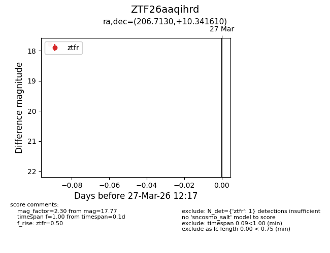
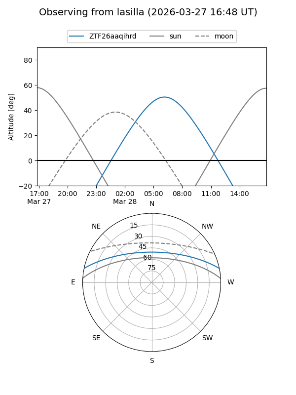
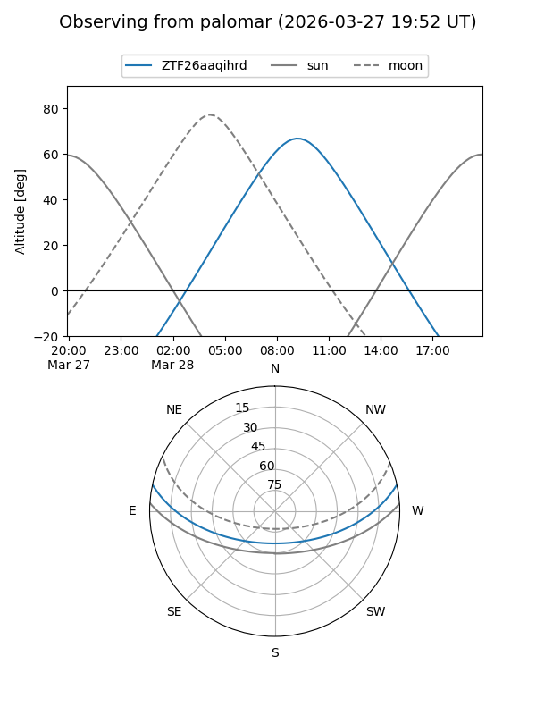

ZTF26aaqihrd
Target ZTF26aaqihrd at 2026-03-27 12:21
Aliases and brokers:
FINK: link
Lasair: link
ALeRCE: link
alt names
ZTF26aaqihrd (ztf,fink_ztf)
Coordinates:
equatorial (ra, dec) = 206.7130,+10.34161
equatorial (HMS+DMS) = 13:46:51.11,+10:20:29.80
galactic (l, b) = (343.4354,+68.73591)
Flags:
Photometry:
last ztfr=17.77
1 ztfr detections
Lightcurve

Visibility


Additional plots